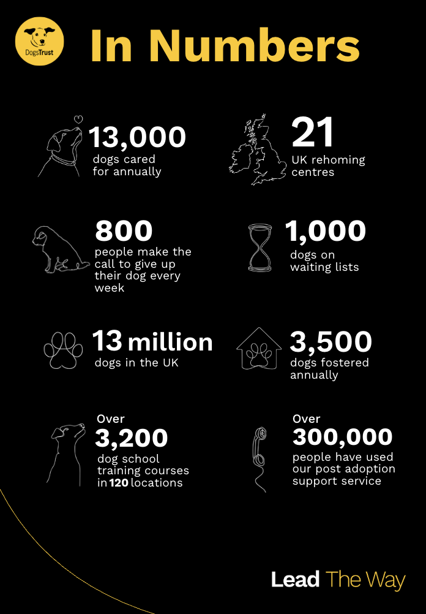
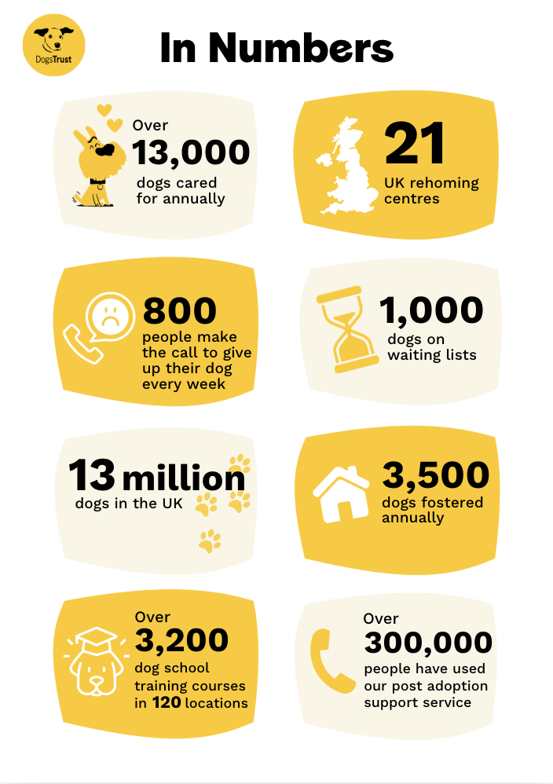
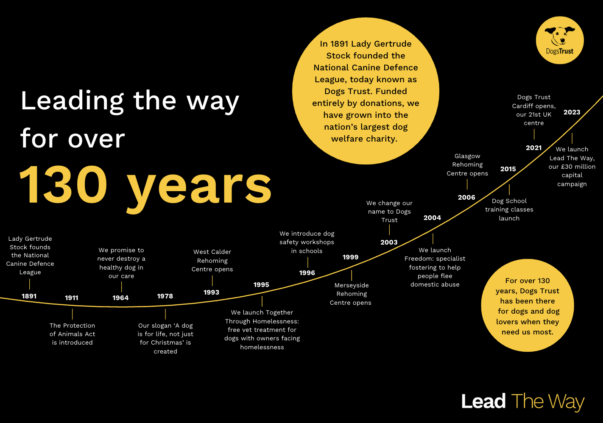
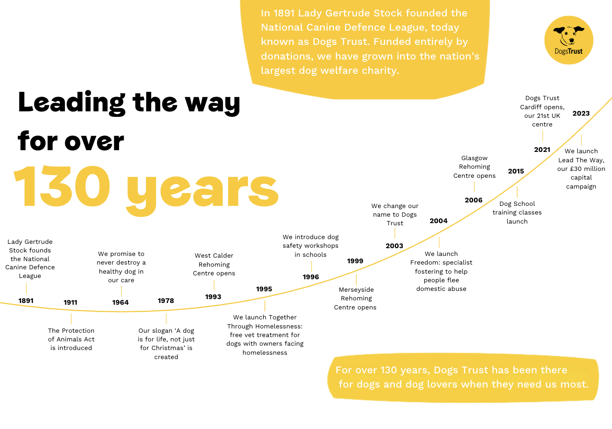
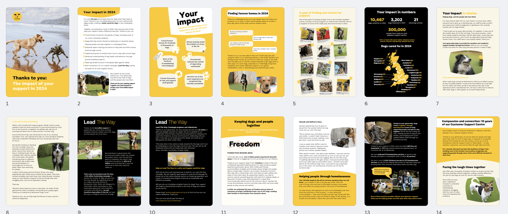

Built and designed the digital annual report using Shorthand
Designed the print-ready PDF version in Canva for wider distribution
Created infographics, timelines, and posters to visualise key data and milestones
Ensured visual consistency across digital and print formats
Focused on making complex information engaging and easy to digest
Adhered to and adapted two distinct brand guideline styles to ensure consistency and appropriate tone across both digital and print formats




